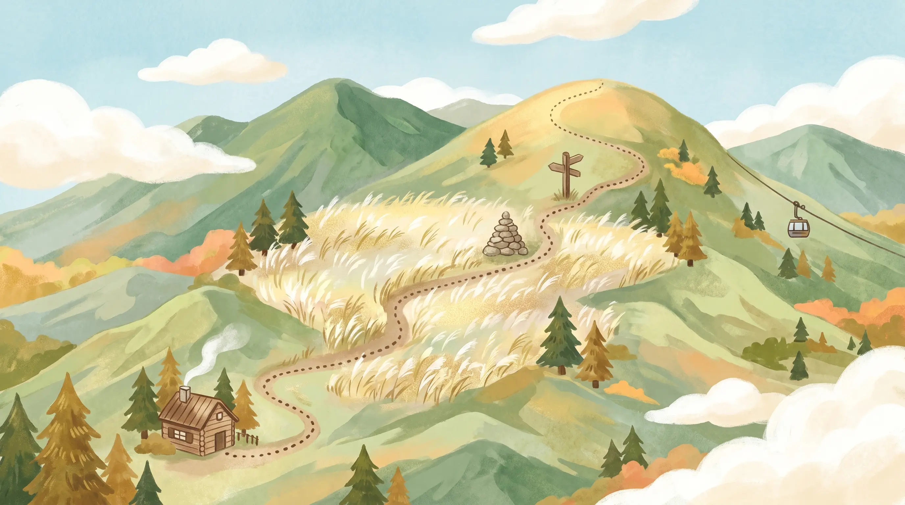

간월재 억새 등반코스 일러스트 그림 · 정확한 코스·소요시간·봉우리 높이는 아래 카드를 참고하세요 AI 일러스트
초급 · 가족
① 간월재 억새 코스
복합웰컴센터 → 임도(넓은 길) → 간월재 억새평원 → 되돌아오기.
케이블카로 더 편하게도 가능.
케이블카로 더 편하게도 가능.
중급
② 신불산 정상 코스
복합웰컴센터 → 간월재 → 신불산 정상(1159) → 신불재 → 하산.
억새+정상 조망을 한 번에.
억새+정상 조망을 한 번에.
상급 · 종주
③ 영남알프스 능선 종주
배내고개 → 간월산 → 간월재 → 신불산 → 신불재 → 영축산(1081) → 하산.
능선 위 은빛 억새 장관.
능선 위 은빛 억새 장관.